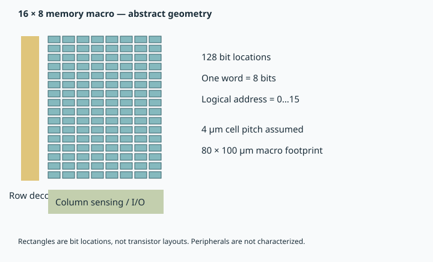

Chapter 6 · Memory systems · 8–12 hours
Memory systems and reliability budgets
What service does the architecture need from the device?
A nonvolatile cell can be useful for storage without being a drop-in replacement for working memory. The distinction follows from access granularity, latency, bandwidth, endurance, and the controller's obligations. A useful downward analysis starts with those obligations and translates them into device requirements.
Prerequisites: Chapter 5 and elementary probability. Objectives: distinguish memory roles; derive capacity, bandwidth, and error budgets; explain wear management; and specify the protocol implemented by the RTL demonstrator. The 3D ferroelectric-memory architecture review and vertical-NAND perspective motivate the alternatives without making every architecture a demonstrated product.
6.1 Storage, working memory, cache, and compute-in-memory
Storage preserves data across power loss and often operates through block-oriented interfaces. NAND storage can tolerate controller translation, page operations, and maintenance that would be unacceptable on every CPU load. Working memory holds actively accessed program data with a different latency and bandwidth contract. Cache stores copies close to computation and needs tag checks, coherence or explicit software management, and fast frequent access.
Compute-in-memory uses memory structures to perform part of an operation rather than transferring all operands to separate arithmetic units. It changes data representation, precision, sensing, and software mapping. A capacitor that stores a weight, a NAND page that stores a file, and a KV cache serving an autoregressive model therefore need different system designs even if all are called “memory.”
The downward question is concrete: does the workload need rare persistent writes, frequent random updates, sequential weight streaming, or analog multiply-accumulate operations? A technology attractive for one pattern may be unsuitable for another. Evaluate useful bytes or operations per second under accuracy and reliability constraints rather than comparing the fastest isolated device pulses.
6.2 Raw capacity is not usable capacity
If an array has $N_r$ rows, $N_c$ columns, and $b$ bits per cell, raw capacity is $N_rN_cb$ bits. Let $f_{\mathrm{ECC}}$ be the fraction consumed by error-correction redundancy, $f_{\mathrm{spare}}$ by replacement rows or blocks, and $f_{\mathrm{meta}}$ by metadata. If these refer to disjoint fractions of the same raw capacity, usable capacity is approximately $C_u=C_r(1-f_{\mathrm{ECC}}-f_{\mathrm{spare}}-f_{\mathrm{meta}})$. If instead each fraction is defined sequentially on remaining space, multiply factors; do not mix definitions.
Multi-level storage increases $b=\log_2L_s$ for $L_s$ levels, but the resulting narrower margins can require stronger correction and more verify steps. Additional raw bits are not automatically additional usable capacity at the same latency and lifetime. The correct comparison holds the required delivered error rate and service life constant.
6.3 From raw bit errors to protected-word failures
Consider a protected word of $n$ bits with a code that corrects any single-bit error. Suppose independent bits each fail with probability $p$. Let $K$ be the number of erroneous bits. The binomial model gives $\Pr(K=k)=\binom nk p^k(1-p)^{n-k}$. The probability that single-error correction cannot restore the word is
The leading approximation retains the first nonzero term. For $n=72$ and $p=10^{-5}$, the project computes $2.55481\times10^{-7}$, close to the leading $2.556\times10^{-7}$. “Uncorrectable” is not necessarily “undetected”: detection capability depends on the code. A 72-bit word suggests a familiar 64-data-bit plus redundancy example, but this probability calculation alone does not implement that code.
Independence is a strong assumption. Shared word-line disturb, supply excursions, radiation events, or correlated process variation can produce multiple errors together. If an event flips a whole row, squaring a small single-bit probability can understate risk severely. Interleaving may spread a burst across protected words, but adds mapping and access consequences.
For $M$ independent protected-word accesses, expected uncorrectable events are $Mp_{\mathrm{uncorrectable}}$. Requiring the probability of any event to stay small can use the union bound $\Pr(\mathrm{any})\le Mp_{\mathrm{uncorrectable}}$, which does not require independence between accesses. Device error targets should be derived from the system's operation count and tolerated failures, not chosen because a laboratory graph looks clean.
6.4 Wear spreading converts lifetime into an allocation problem
Let $N_e$ be an assumed endurance limit in physical stress cycles per location, $N_w$ the number of locations over which writes can be spread, $r_L$ the logical write rate, and $a_w$ the write-amplification factor. The latter counts physical writes, including maintenance, per logical write. Under ideal uniform wear, lifetime is approximately $T=N_eN_w/(a_wr_L)$.
With synthetic choices $N_e=10^6$, $N_w=1024$, $r_L=100$ writes/s, and $a_w=2$, the result is 5,120,000 s. A fixed hotspot receiving all writes reaches the same endurance count in 5,000 s. This thousandfold difference comes from mapping, not improved material. It is an upper-bound allocation example: imperfect spreading, capacity reserved for management, bad blocks, and variable endurance reduce the benefit.
Controllers may remap addresses, maintain counters, perform scrubbing, and verify writes. Their metadata must itself survive interruption and corruption. The delivered small controller intentionally stops before a full flash translation layer; its interface and fault handling are sufficient to expose the device-to-controller boundary without implying enterprise storage functionality.
6.5 Latency and bandwidth are different contracts
If a bank returns a word of $W$ bits every $t_a$ seconds, its ideal payload rate is $W/(8t_a)$ bytes/s. With $B$ independent banks the ideal aggregate is $BW/(8t_a)$. A shared bus of width $W_b$ and clock frequency $f$ caps the delivered rate at approximately $W_bf/8$ for one transfer per clock, before protocol overhead. The usable rate is bounded by the smaller resource rate.
A workload requiring 80 GB/s on a 128-bit single-transfer interface would require 5 GHz with no overhead. A 500 MHz interface of that width instead offers 8 GB/s. More cell-level parallelism cannot cross this interface without widening it, increasing transfer rate, or performing work near memory. Latency also includes queueing; doubling banks does not halve the delay of an isolated access if decoder and wire delays remain unchanged.
6.6 The demonstrator's service contract
The hardware example stores sixteen 8-bit words. A request is accepted on a rising clock edge when both valid and ready are high. The controller latches operation, address, and write data. While busy it ignores requests; the producer must obey the handshake. It produces a one-cycle response two cycles after an accepted read or four cycles after an accepted write.
A fault at the completion boundary produces an error response. A faulted write does not modify the behavioral memory. Reset aborts an in-flight transaction but does not erase previously committed memory contents. These semantics are verified in simulation. They teach protocol and state preservation; they do not model analog write verification, retention loss, a fabricated ferroelectric array, ECC, or power-fail atomicity during an analog pulse.

6.7 Reliability project
Run python -X utf8 projects/stack.py reliability. Inputs are word length, raw bit error, state-window statistics, endurance, logical write rate, write amplification, and number of wear locations. Outputs are the exact binomial tail, its small-error approximation, a Gaussian sensing-error example, and ideal versus hotspot lifetime. The numerical tail is summed directly to avoid subtracting two probabilities almost equal to one.
For an optimization extension, enumerate redundancy choices and mapping sizes under a fixed usable-capacity constraint. Reject choices whose expected failure count exceeds the service budget. Report usable capacity, mean access overhead, and lifetime separately. A scalar “reliability score” would conceal which contract is being violated.
6.8 Exercises and solutions
1. A system-level error budget
A system performs $10^{12}$ protected-word accesses and allows at most $10^{-3}$ expected uncorrectable events. What per-access target follows?
Solution. Require $10^{12}p_u\le10^{-3}$, hence $p_u\le10^{-15}$. This is an expectation budget; translating it into a probability of any event requires additional reasoning or a bound. The synthetic $2.55\times10^{-7}$ example is far from this demanding target.
2. Write amplification penalty
What happens to ideal wear lifetime if write amplification rises from 2 to 5?
Solution. Lifetime scales inversely with amplification, giving a factor $2/5=0.4$. A more sophisticated controller can therefore reduce lifetime if its extra copying outweighs better wear distribution.
3. Same device, different placement
Why might Fe-NAND help model-weight storage without replacing the active KV cache?
Solution. Persistent weights can be stored and loaded in large blocks, while active KV state is updated repeatedly and read at latency-sensitive steps. Different access granularity, endurance, and bandwidth requirements apply. A storage benefit becomes a decoding benefit only if the architecture changes the critical data path and its costs are measured.
You can now translate a workload's lifetime and bandwidth requirements into device and controller constraints. Chapter 7 makes the transaction contract executable.